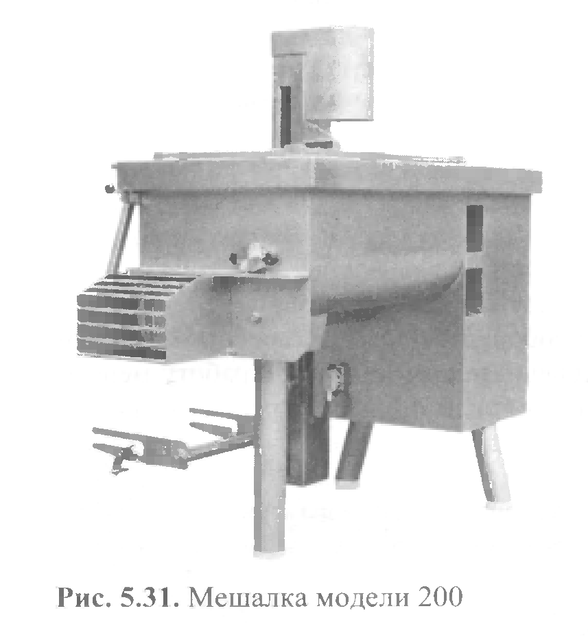

фаршемешалка VVS200

Мешалки фирмы VVS (Италия) предназначены для перемешивания мясного фарша с ингредиентами и соответствуют всем европейским нормам и правилам по безопасности и гигиене. Мешалка модели 200 предназначена для перемешивания мясного фарша с ингредиентами в небольших количествах. Корпус мешалки представляет собой сварную конструкцию дежи с силовым шкафом из высококачественной нержавеющей стали на трех опорах. Внутри дежи установлены два перемешивающих вала с приваренными лопатками. Валы вращаются в разные стороны так, что движение фарша происходит со дна, к центру и затем в разные стороны к периферии корпуса дежи. В силовом шкафу размещены: электрооборудование, приводы и другие механизмы, обеспечивающие надежную работу мешалки. Сверху дежа закрывается решеткой с блокировочным устройством. На боковой поверхности силового шкафа расположена кнопочная станция управления мешалкой, с противоположной стороны встроен подъемник для тележек. Разгрузка мешалки производится с торцевой части при помощи включения реверса.